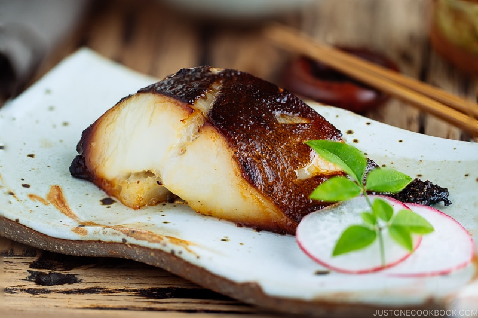

Miso Black Cod

Description
Black cod with miso is a classic Japanese seafood dish
that is served at many formal Japnese restaurants.
It is made by marinating the fish in a sake-miso marinade resulting
in a delicate and buttery dish.
Ingredients
- white miso paste
- water
- mirin
- sake
- brown sugar
- salt
- black cod fillets
Steps
- Sprinkle salt over the fish and set it aside for 30 minutes.
- Whisk the miso, water, mirin, sake and brown sugar together in a small skillet over medium heat until mixture simmers and thickens slightly.
- Transfer the marinade into a flat-bottomed airtight container and let it cool.
- Pour 2 tbsp of sake over the fish to rinse off the salt and gently pat dry with a paper towel to remove the moisture.
- Once the marinade has cooled, place the fish in the marinade and coat the fish on both sides.
- Cover the container and keep it in the refrigerator. You can let it marinade for anywhere between 1 to 3 days depending on how salty you want the dish.
- After letting it marinade, take the fish out of the container and scrape off all the marinade completely.
- Preheat oven to 200 degrees. Place parchment paper on a baking pan and oil it.
- Bake the fish fish until the surface is browned a bit. This takes around 20 minutes.
- Serve with rice.